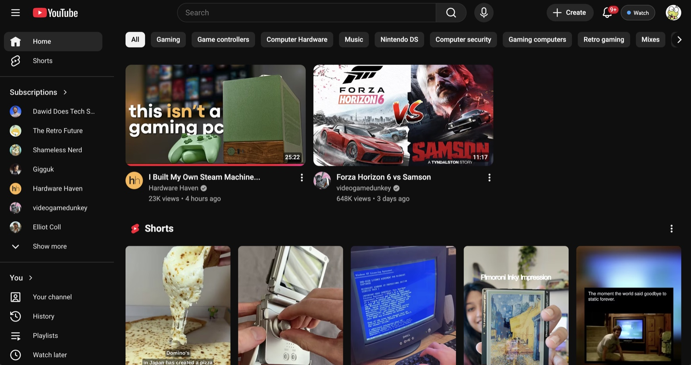
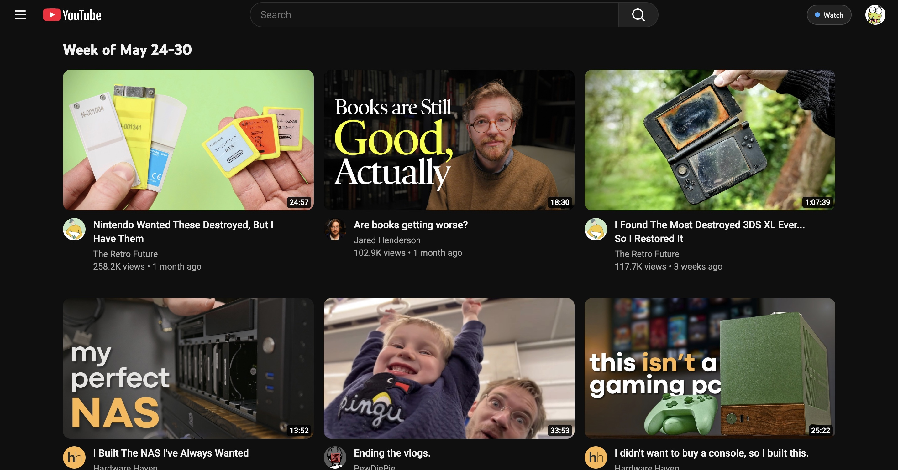
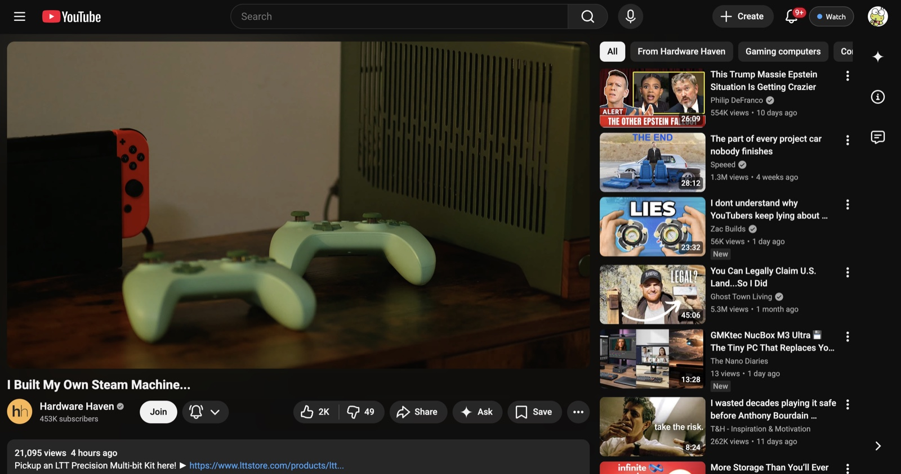
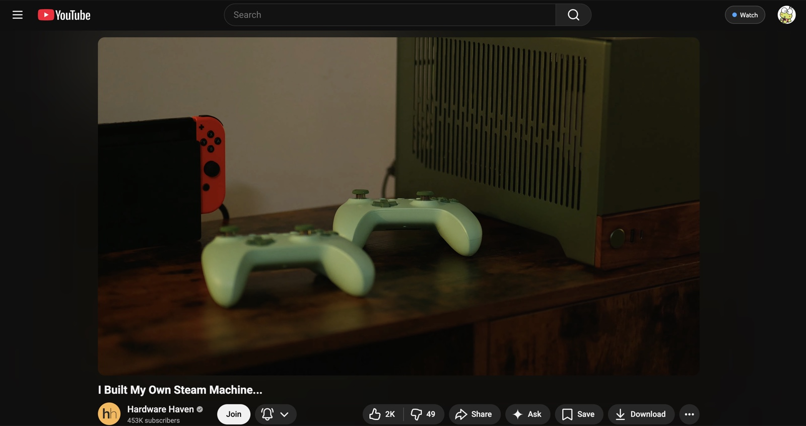
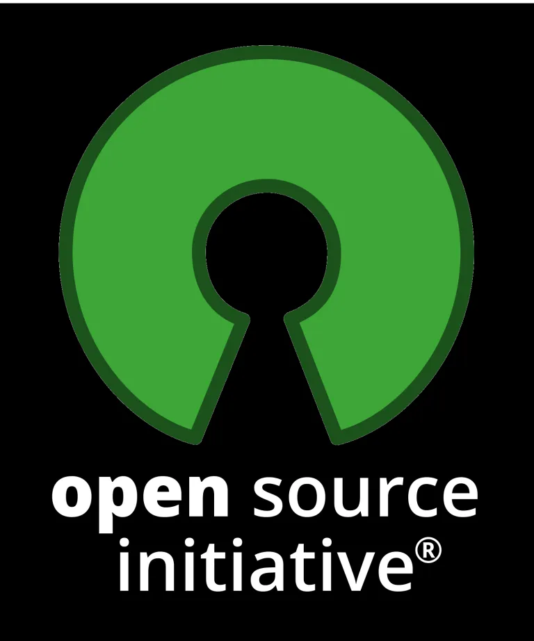

Replace the algorithmically-generated, infinite content that YouTube forces on you, with a new, better feed that only changes and refreshes when you want it to.





BetterFeed is GPL-licensed and always free to use or modify.